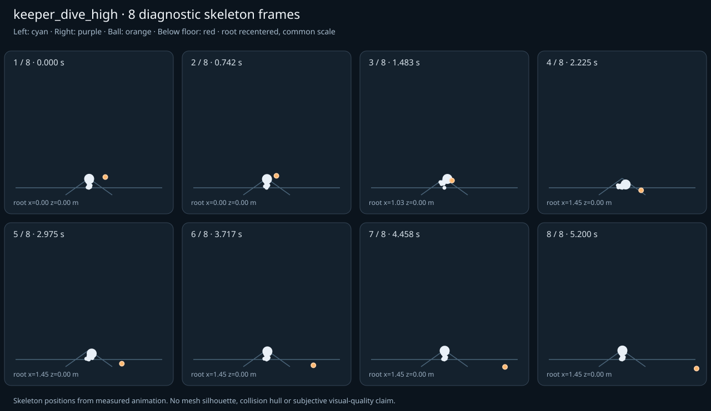

כל המדידות · תצוגת התנועה · JSON מקורי
ציון 95.5 · כיסוי 100%
עמידת ייחוס באותו תפקיד: keeper_ready. תרחיש השחקן החיצוני מיושם פעם אחת.

| מדד | מצב | ערך | ציון | ראיות |
|---|---|---|---|---|
| החלקת רגליים | ירוק | 0.000162 | 99.68 | ראיות מקוריות{
"coordinateSpace": "Native GLB plus declared external actor position and heading, applied once.",
"supportSource": "declared",
"windows": 6,
"samples": 546,
"maxDriftMeters": 0.000274,
"p95SpeedMetersPerSecond": 0.004862,
"worst": {
"bone": "RightFoot",
"t": 4.7,
"start": 4.05,
"end": 5.2,
"driftMeters": 0.000274
}
} |
| חדירה לרצפה | ירוק | 0 | 100 | ראיות מקוריות{
"samples": 12500,
"floorY": 0,
"probeKind": "declared sole probes plus skeletal joint centers (no mesh surfaces)",
"maxDepthMeters": 0,
"worst": {
"t": 0,
"bone": "LeftFoot",
"depthMeters": 0,
"y": 0.004
}
} |
| קפיצות פוזה | צהוב | 1.141325 | 77.17 | ראיות מקוריות{
"adjacentPairs": 624,
"observations": 10608,
"maxDegrees60Hz": 7.82577,
"maxMarkerStepHeight60Hz": 0.045653,
"maxRootStepHeight60Hz": 0.019859,
"worst": {
"ratio": 1.1413249756373038,
"t": 0.808333,
"previousTime": 0.8,
"bone": "RightForeArm",
"markerStepHeight60Hz": 0.045653,
"degrees60Hz": 7.028081
}
} |
| חריגות אנטומיות | ירוק | 0 | 100 | ראיות מקוריות{
"testedFrames": 625,
"affectedFrames": 0,
"checks": 10625,
"maxLimbFlexionDegrees": 142.841045,
"maxRelativeSegmentLengthChange": 0,
"hingeDirectionChecked": true,
"axialTwistChecked": false,
"violations": []
} |
| מגע בכדור | ירוק | 0 | 100 | ראיות מקוריות{
"radiusMeters": 0.11,
"samples": 1,
"missed": [],
"contacts": [
{
"t": 1.1,
"bone": "LeftHand",
"gapMeters": 0,
"signedGapMeters": 0,
"centerDistanceMeters": 0.11,
"contactPoint": [
0.954321,
1.78,
0.17
],
"ballCenter": [
0.954321,
1.78,
0.28
],
"declaredLocalPoint": true
}
],
"contactDetailsTruncated": false,
"coordinateSpace": "Native GLB plus declared external actor position and heading, applied once."
} |
| כניסה ויציאה מול המתנה | ירוק | 0.002253 | 99.95 | ראיות מקוריות{
"entry": {
"ratio": 0.0022531719998944632,
"t": 0,
"idleTime": 2.4,
"markers": 17,
"rmsPositionHeight": 0,
"rmsRotationDegrees": 0.000001,
"rmsVelocityHeightPerSecond": 0.00169,
"velocityEvaluated": true
},
"exit": {
"ratio": 0.0002283667877917286,
"t": 5.2,
"idleTime": 2.4,
"markers": 17,
"rmsPositionHeight": 0,
"rmsRotationDegrees": 0.000001,
"rmsVelocityHeightPerSecond": 0.000171,
"velocityEvaluated": true
},
"worstEndpoint": "entry",
"alignment": "horizontal root translation; raw asset poses used when provided"
} |
| מהירות גוף מול צעדים | לא חל | — | — | ראיות מקוריות{} |
| סימטריה | ירוק | 0 | 100 | ראיות מקוריות{
"mode": "structural",
"modeSource": "declared",
"structuralMismatch": 0,
"segments": [
{
"segment": "Arm-ForeArm",
"mismatch": 0
},
{
"segment": "ForeArm-Hand",
"mismatch": 0
},
{
"segment": "UpLeg-Leg",
"mismatch": 0
},
{
"segment": "Leg-Foot",
"mismatch": 0
}
],
"motionRmsHeight": null,
"worstMotion": null,
"bilateralPoseRmsHeightUnscored": 0.134517,
"note": "One-sided authored actions are checked for structural symmetry only."
} |